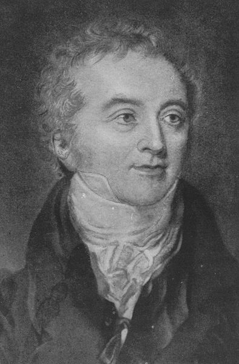
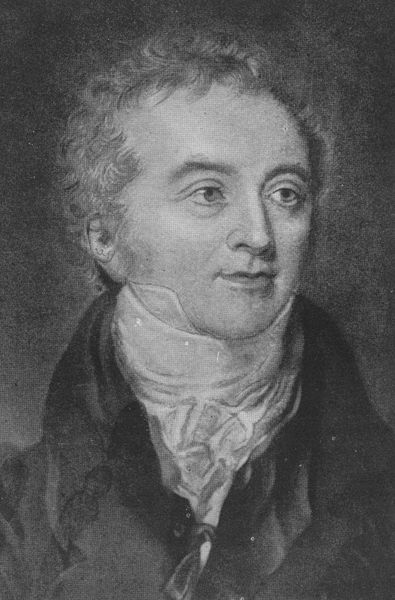
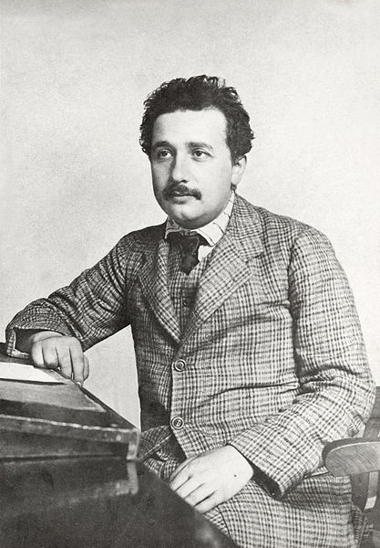
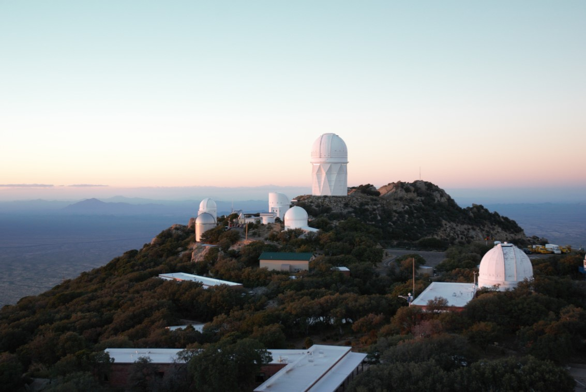
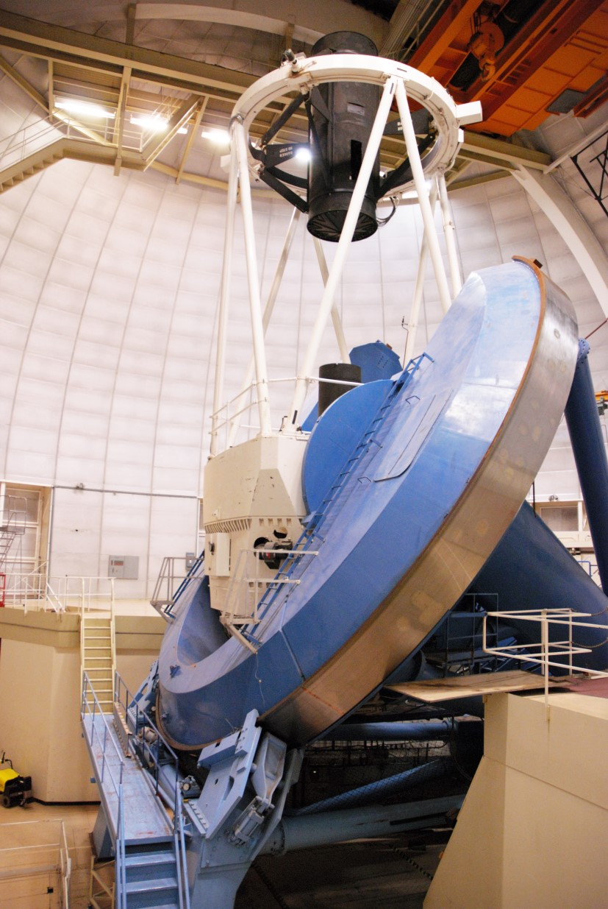

Lumière et télescopes
CEA Explorer et comprendre l’Univers
28 mars 2024
Réflexion

Diffraction


Interférence (expérience de Young)

Particule


Onde
Robert Hooke
 

Théorie corpusculaire
- Explique la réflexion
- Explique la réfraction
- Explique la dispersion
- Est supportée par une grosse pointure (Newton)
Théorie ondulatoire
- Explique la réflexion
- Explique la réfraction (correctement)
- Explique la dispersion
- Explique la diffraction
- Explique l’interférence
Théorie
ondulatoire éventuellement acceptée comme correcte jusqu’au début du
XXe siècle
Dualité onde-particule
Lumière est une onde
qui se comporte parfois comme une particule
nommée photon

Onde

Onde électromagnétique

Anatomie d’une onde

299 792 458 m/s
1 079 252 850 km/h
C’est vite?
- Voiture la plus rapide (Hennessey Venom GT) : 435
km/h
 (TheSuperCars.org)
(TheSuperCars.org)
- Vitesse du son : 1 236 km/h
C’est vite?
- Jet le plus rapide (SR-71 Blackbird) : 3 530 km/h

C’est vite?
- Navette spatiale à l’entrée de l’atmosphère :
28 000 km/h

C’est vite?
40 000 fois plus vite
que la navette spatiale
Année-lumière
- Dans un intervalle de temps donné, la lumière parcourt une certaine
distance
- Exemple :
- Une voiture se déplace à 60 km/h
- Quelle distance parcourt-elle en 30 minutes ?
- Quelle distance parcourt-elle en 3 heures ?
Année-lumière
| Seconde-lumière |
299 792,458 km |
| Minute-lumière |
17 987 547,48 km |
| Semaine-lumière |
181 314 478 598 km |
| Année-lumière |
9 454 254 955 488 km |
Année-lumière
| Terre-Soleil |
8,32 minutes-lumière |
| Pluton-Soleil |
5,5 heures-lumière |
| Soleil-Proxima Centauri |
4,22 années-lumière |
Un télescope est un instrument qui collecte la lumière provenant
d’une source lointaine

Réfracteur

Problèmes des télescopes
réfracteurs
- Difficile de produire lentilles parfaitement transparentes
- Grosses lentilles se déforment
- Coût de production élevé
- Aberration chromatique
Avantages des télescopes
réflecteurs
- Pas d’aberration chromatique
- Peuvent être supporté par l’arrière
- Plus facile à construire
 (NASA/Goddard/Chris Gunn)
(NASA/Goddard/Chris Gunn)
Observation astronomique moderne

Observation astronomique moderne

Observation astronomique moderne

Fonctions de la monture
- Supporter l’objectif et les instruments
- Pointage
- Entraînement sidéral
Monture équatoriale
- Alignée sur les pôles célestes
- Entraînement sidéral simple
- Très grosse, très massive
- Difficile à construire
Monture azimutale
- Un axe horizontal, un axe vertical
- Nécessite des calculs complexes pour l’entraînement sidéral
- Souvent combinée avec un ordinateur
- Plus petite
- Plus facile à construire